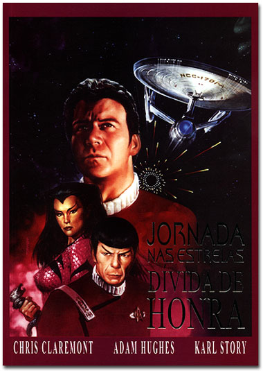

|


Jornada nas Estrelas: Dvida
de Honra
Confira o review
completo da obra pelo Trek Brasilis

|
 Sinopse A histria se passa logo aps os eventos mostrados em Jornada nas Estrelas IV A Volta para Casa, e inicia-se com o capito Kirk tendo um assustador pesadelo, no qual relembra as mortes de Kruge, o capito Klingon de Jornada nas Estrelas III Procura de Spock, de seu filho David Marcus, de Khan, e (sem dvida a lembrana mais dolorosa) da destruio de sua adorada USS Enterprise, quando acordado com um belo banho pela baleia Gracie, a baleia jubarte trazida por Kirk e companhia direto de 1986 em Jornada IV. O capito encontra-se em um iate, na companhia da Dra. Gillian Taylor, a biloga de cetceos que tambm veio do passado, e que encontrava-se acompanhando os ltimos dias de gestao da baleia. Kirk sente dificuldade em superar seus traumas, e a Dra. Taylor sofre na tentativa de adaptar-se nova realidade que a cerca. Em um flashback, vemos o jovem Tenente Kirk a bordo da USS Farragut, a qual encontra-se seriamente avariada e perigosamente prxima borda da Zona Neutra Romulana. Kirk havia sido designado para reparar os sensores primrios da nave, e em virtude do enorme volume de trabalho recebe um tanto a contragosto a ajuda de TCel, uma jovem engenheira vulcana que encontrava-se a bordo da Farragut a caminho das Estaes Watchtower, instaladas em asterides prximos Zona Neutra e destinadas sua observao. Durante os reparos, a Farragut sofre o impacto de um projtil, do qual emergem estranhas criaturas de aparncia insetide, garras e dentes afiados e capazes de expelir uma estranha gosma. Kirk e TCel tentam defender-se e nave, mas os biches so em maior nmero, e logo comeam a tomar a seo de Engenharia, causando muitas baixas. Em pouco tempo, no resta alternativa aos sobreviventes a no ser refugiar-se na seo Disco e separ-la da Engenharia. Quanto j encontravam-se no Disco, Kirk e TCel constatam que sua separao poderia ser feita apenas manualmente, o que os leva de volta seo de Engenharia e para o meio do enxame gosmento. Kirk consegue separar o Disco, mas ferido ao tentar salvar TCel. Porm, ambos conseguem fugir em um casulo de emergncia e destruir o casco principal da Farragut. TCel pilota o casulo at uma das estaes Watchtower, onde diz a Kirk que vai coloc-lo em xtase, tornando-o invisvel a sensores romulanos at que possa ser resgatado, e vai pilotar o mesmo casulo para fora do complexo, atraindo a ateno dos orelhudos para si. Tempos depois, j na sede da Frota Estelar, o futuro capito da Enterprise informado que todas as evidncias sobre os insetos melecosos haviam sido destrudas, restando somente o depoimento um tanto desacreditado de Kirk. Tambm descobre que foram encontrados destroos do casulo de emergncia, sem qualquer vestgio de TCel. O governo vulcano, por sua vez, no se interessa muito pelo caso, alegando problemas com a famlia da engenheira. De volta ao presente, Kirk tem o iate abordado por um rover, do qual desembarcam a Ten. Saavik e o Professor Lars Hel, antroplogo especializado no Sculo XX. Kirk parte com Saavik, deixando a Dra. Taylor na companhia do Prof. Hel. O capito ento parte para um encontro, na regio prxima Zona Neutra Romulana e s agora abandonadas estaes Watchtower, de antigos amigos: Kor, o primeiro Klingon de Jornada e TCel, agora comandante de uma Ave-de-Guerra Romulana. Ambos testemunharam, tal como Kirk, os ataques das criaturas gosmentas insetides ao longo dos anos, conforme podemos ver ao longo de diversos flashbacks que encampam toda a histria de Jornada, o que os levou a deduzir que os biches atacam sempre naquela regio do espao logo aps eventos de grande magnitude csmica, como os ataques da criatura gasosa do episdio Obsession, da Mquina do Juzo Final, no episdio The Doomsday Machine, da aproximao de VGer da Terra, e mais recentemente, da sonda aliengena que buscava contato com as ento extintas baleias jubartes terrestres. Ao chegar ao ponto de encontro, Kirk surpreende-se com a chegada da Enterprise-A, cuja tripulao partiu em misso no-autorizada a fim de ajudar o nobre capito. Aps um breve reencontro entre os comandantes das trs raas, iniciam-se os procedimentos de trabalho conjunto: a unio entre a Enterprise e a nave romulana, o que as deixa invisveis, e o posicionamento da nave klingon como isca para um eventual ataque das criaturas. Confirmando as suspeitas dos trs comandantes, logo emerge de dobra uma gigantesca nave de aparncia orgnica, transportando as nojentssimas criaturas, iniciando um ataque nave dos Klingons. Segue-se intenso combate entre as criaturas e as trs tripulaes, enquanto um grupo avanado transporta-se ao interior da estranha nave aliengena. L, descobre-se que a nave das criaturas, que mais parece um organismo vivo, desloca-se atravs de fendas no continuum-espao tempo, o que comprova a origem das criaturas em um ponto imensamente distante do Universo, bem como que a fenda que a trouxe at aquele setor est prestes a abrir-se novamente. Kirk decide ento utilizar-se de uma poderosa arma, a fim de implodir a fenda espacial quando a nave-orgnica-melecosa estivesse atravessando-a, o que a prenderia do outro lado por muito tempo. A fenda abre-se novamente, e a nave aliengena impedida de atacar a Enterprise pela nave de TCel, que segue em direo fenda espacial. Aproveitando a oportunidade, Kirk dispara a arma, selando definitivamente a fenda e impedindo por muitos anos novas ameaas das tais criaturas. Finalmente, Kirk retorna Terra e ao iate da Dra. Taylor, chegando a tempo de testemunhar o nascimento do filhote de Gracie, o que comemorado com um brinde entre o capito e a biloga. Um brinde com vinho do Chateau Picard. Comentrio Este sem dvida, um item obrigatrio na coleo de qualquer trekker que se preze, to carente que de novidades em portugus em Jornada nas Estrelas, ainda mais com a qualidade apresentada neste belo lbum em preto-e-branco lanado pela editora Brainstore. Dvida de Honra foi publicada nos Estados Unidos em 1992 pela DC Comics, em cores, com o ttulo Debt of Honor. Escrita por de Chris Claremont, famosssimo no mundo dos quadrinhos de super-heris pelo seu extenso trabalho no ttulo Uncanny X-Men, com arte de Adam Hughes (que assina simplesmente AH!) famoso por desenhar mulheres e que recentemente foi responsvel pela arte de capa da revista Wonder Woman, tambm da DC Comics, e arte-finalizada por Karl Story, traz uma histria envolvente e repleta de referncias e subplots, bem moda de Claremont. notvel o extenso trabalho de pesquisa realizado pela equipe de criao, revelado tanto no texto, dado o sem-nmero de referncias srie original e aos filmes produzidos para o cinema, as quais ensejaram at um apndice com notas explicativas ao final do lbum, quanto na arte de Hughes e Story, que tambm valeram-se das mesmas fontes para o design dos personagens, roupas, naves e acessrios diversos, tornando a caa a estas referncias um passatempo divertido para aqueles com olho clnico. A trama bastante interessante, pois alinhava os bastidores de diversos eventos que fazem parte da extensa cronologia oficial de Jornada nas Estrelas, fala sobre um tema atraente a muita gente (a superao de erros do passado), um vilo (ou viles) misterioso e, para aqueles que tem Jornada nas Estrelas IV A Volta para Casa(que alis, foi lanado recentemente em DVD por aqui) como o melhor dos longa-metragens do franchise, h um sabor especial, pois d boas dicas do destino da Dra. Gillian Taylor no Sculo XXIII. Enfim, a despeito da velha polmica acerca da canonicidade ou no de eventos apresentados em quadrinhos, livros e outras mdias nas quais Jornada nas Estrelas apresenta-se, Dvida de Honra entretenimento de primeira, feito por quem entende do assunto, seja quadrinhos ou Jornada, mas que tem tudo para agradar queles no familiarizados com o franchise. Ficha tcnica "Jornada nas Estrelas: Dvida
de Honra" Na internet: Brainstore |